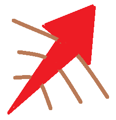

| 구분 | 기본능력(+레벨당 상승) | 최종능력치 |
|---|---|---|
| 체력 | 585(+85) | 2030 |
| 체력 재생 | 7(+0.85) | 21.45 |
| 마나 | 450(+60) | 1470 |
| 마나 재생 | 6(0.75) | 18.75 |
| 공격력 | 50(+3) | 101 |
| 공격 속도 | 0.644(+3.4%) | 1.016 |
| 방어력 | 27(+3.5) | 86.5 |
| 마법 저항력 | 32(+1.25) | 53.25 |
| 사거리 | 475 | 475 |
| 이동 속도 | 330 | 330 |
눈에 띄는 능력치로는 높은 기본 마나량이 있다. 성장 마나량도 준수한 편이다. 공격 속도 역시 W 패시브와 데이지를 활용하기 좋도록 원거리 딜러급으로 높게 책정되어 있다. 다만 패시브를 통해 공격을 전혀 하지 않고 정글몹을 잡을 수 있어서인지 공격력 수치는 낮다. 공식 난이도가 높게 책정된 것 치고 조작과 운용은 쉬운 편이나, 서포팅형 정글이라는 독특한 포지션이기 때문에 아군의 아이번 이해도와 조합 등의 팀 의존도가 매우 높으므로 어려운 난이도의 챔피언이다.
싸움하길 꺼리고 생명을 사랑하고 돌본다는 설정 때문인지 매우 조심스럽게 공격하는 모션을 가지고 있다. 기본적으로 한쪽 손을 앞으로 내밀며 투사체를 던지고, 적이 가까이 있을 경우 살짝 밀치거나 가볍게 쳐낸다.